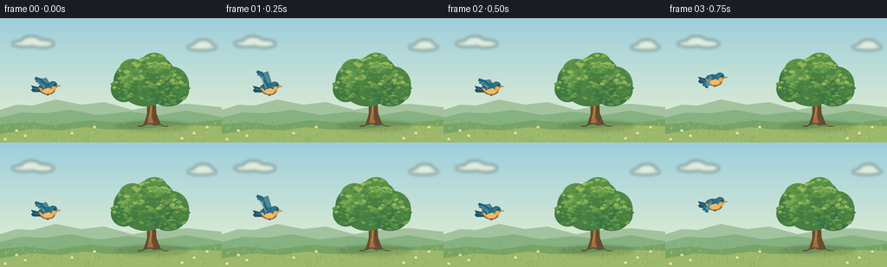
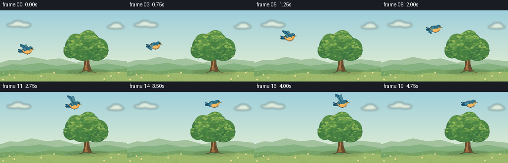

CODING AGENTS AS PIXEL WORLD MODELS
traex/GPT-6.1-Sol · dynamic_spatial_relationship_0048
点击播放 · 原生 RGB 像素
逐轮保存的候选
回放视频、检查图与代码变化。
每份候选均可单独播放。实际图片检查记录在下方工具轨迹中。
候选 01播放与检查图
点击播放 · 原生 RGB 像素


展开代码变化
--- 上一保存版本
+++ 本次保存版本
@@ -0,0 +1,133 @@
+from pathlib import Path
+import math
+import numpy as np
+from PIL import Image, ImageDraw, ImageFilter
+import artifact_io
+
+ROOT=Path(__file__).resolve().parent
+W,H,S=256,144,4
+rng=np.random.default_rng(48)
+
+def poly(d, pts, fill, outline=None, width=1):
+ p=[(round(x*S),round(y*S)) for x,y in pts]
+ d.polygon(p,fill=fill)
+ if outline: d.line(p+[p[0]],fill=outline,width=max(1,round(width*S)),joint='curve')
+def ell(d,box,fill,outline=None,width=1):
+ d.ellipse(tuple(round(v*S) for v in box),fill=fill,outline=outline,width=max(1,round(width*S)))
+def line(d,pts,fill,width=1):
+ d.line([(round(x*S),round(y*S)) for x,y in pts],fill=fill,width=max(1,round(width*S)),joint='curve')
+def bez(a,b,c,e,n=25):
+ return [((1-t)**3*a[0]+3*(1-t)**2*t*b[0]+3*(1-t)*t*t*c[0]+t**3*e[0],(1-t)**3*a[1]+3*(1-t)**2*t*b[1]+3*(1-t)*t*t*c[1]+t**3*e[1]) for t in np.linspace(0,1,n)]
+
+# Quiet, sunlit meadow; the fixed view makes the change in spatial relation unambiguous.
+y=np.linspace(0,1,H*S)[:,None,None]
+top=np.array([158,207,220])[None,None,:]; bottom=np.array([235,242,209])[None,None,:]
+sky=np.broadcast_to(top*(1-y)+bottom*y,(H*S,W*S,3)).copy().astype(np.uint8)
+bg=Image.fromarray(sky); d=ImageDraw.Draw(bg)
+# Soft clouds, deliberately kept away from the bird's destination.
+cloud=Image.new('RGBA',bg.size); cd=ImageDraw.Draw(cloud)
+for box in [(14,26,43,33),(25,21,47,32),(36,25,62,34),(216,30,250,37),(224,25,245,36)]: ell(cd,box,(251,250,225,160))
+cloud=cloud.filter(ImageFilter.GaussianBlur(2*S)); bg=Image.alpha_composite(bg.convert('RGBA'),cloud).convert('RGB'); d=ImageDraw.Draw(bg)
+poly(d,[(0,106),(19,100),(38,101),(64,94),(94,100),(120,97),(153,106),(180,101),(217,99),(256,103),(256,144),(0,144)],(163,194,158))
+poly(d,[(0,115),(24,109),(51,110),(81,106),(113,112),(149,108),(184,112),(215,107),(256,114),(256,144),(0,144)],(133,178,128))
+poly(d,[(0,123),(30,120),(59,124),(103,118),(140,121),(178,118),(217,121),(256,117),(256,144),(0,144)],(119,164,102))
+# A warm sunlit bank and delicate ground cover.
+poly(d,[(0,134),(36,128),(69,130),(98,126),(126,129),(165,128),(204,124),(256,125),(256,144),(0,144)],(156,184,107))
+for _ in range(220):
+ x=float(rng.uniform(0,256)); yy=float(rng.uniform(118,145)); h=float(rng.uniform(1.2,4))
+ c=[(119,158,84),(133,166,90),(174,195,117),(185,202,129)][int(rng.integers(0,4))]
+ line(d,[(x-0.8,yy),(x,yy-h),(x+0.8,yy-0.3)],c,0.35)
+for x,yy in [(19,130),(29,136),(83,133),(109,126),(224,133),(239,126),(6,140),(210,139)]:
+ line(d,[(x,yy+3),(x+.3,yy)],(86,141,87),.45)
+ for a in range(5):
+ aa=a*math.tau/5; px=x+math.cos(aa)*1; py=yy+math.sin(aa)*1
+ ell(d,(px-.6,py-.6,px+.6,py+.6),(252,243,191))
+ ell(d,(x-.45,yy-.45,x+.45,yy+.45),(225,175,70))
+# Broad soft cast shadow anchors the large oak.
+sh=Image.new('RGBA',bg.size); sd=ImageDraw.Draw(sh)
+ell(sd,(133,119,219,130),(50,85,49,54)); sh=sh.filter(ImageFilter.GaussianBlur(2*S)); bg=Image.alpha_composite(bg.convert('RGBA'),sh).convert('RGB')
+
+# The asymmetrical silhouette and layered foliage are drawn from geometry only.
+canopies=[(153,73,22,22),(176,66,26,23),(198,77,20,21),(168,81,28,21),(143,82,15,15),(194,86,21,16),(178,52,15,12),(153,61,16,14),(209,83,9,12)]
+leaf_specs=[]
+for cx,cy,rx,ry in canopies:
+ for j in range(45):
+ ang=rng.uniform(0,math.tau); rad=math.sqrt(rng.uniform(0,.88))
+ x=cx+math.cos(ang)*rx*rad; y0=cy+math.sin(ang)*ry*rad
+ rr=float(rng.uniform(1.0,3.2)); k=int(rng.integers(0,5))
+ leaf_specs.append((x,y0,rr,k))
+
+def tree(im,t):
+ d=ImageDraw.Draw(im)
+ # Exposed branching trunk, warm bark and rounded root flare.
+ poly(d,[(166,124),(170,111),(170,92),(163,79),(157,71),(160,70),(170,79),(174,89),(179,73),(187,66),(189,67),(182,77),(179,91),(180,110),(185,123),(178,124),(173,122)],(108,78,48),(83,66,44),.8)
+ poly(d,[(174,84),(176,91),(175,115),(177,121),(170,121),(173,109)],(162,113,65))
+ line(d,[(178,93),(177,107),(180,119)],(81,65,46),.7)
+ line(d,[(173,96),(174,106),(172,115)],(203,147,83),.65)
+ line(d,[(170,119),(164,125),(159,125)],(92,78,46),1.5)
+ line(d,[(180,119),(189,125),(194,125)],(92,78,46),1.1)
+ # The same crown persists throughout, with barely perceptible breeze.
+ dx=.35*math.sin(t*1.5)
+ cols=[(66,120,68),(73,132,70),(78,134,68),(72,126,65),(64,121,65),(62,116,66),(85,143,74),(94,147,73),(73,126,65)]
+ for (cx,cy,rx,ry),c in zip(canopies,cols):
+ ell(d,(cx-rx+dx,cy-ry,cx+rx+dx,cy+ry),c)
+ for x,y0,r,k in leaf_specs:
+ # Light is from the top left; the crown is darker underneath.
+ cols2=[(105,156,74),(121,168,81),(145,181,89),(92,145,71),(75,133,69)] if y0<76 else [(82,139,69),(93,148,73),(110,158,76),(68,125,66),(74,132,65)]
+ c=cols2[k]
+ ell(d,(x-r+dx,y0-r*.55,x+r+dx,y0+r*.55),c)
+ if k==2 and r>2.1:
+ line(d,[(x-r*.35+dx,y0),(x+r*.5+dx,y0-.2)],(160,190,105),.28)
+ # Dappled light at the lip of the canopy.
+ for x,y0,r in [(146,62,3.5),(163,48,3),(177,43,3),(188,52,3.2),(132,80,2.3)]:
+ ell(d,(x-r+dx,y0-r/2,x+r+dx,y0+r/2),(153,184,89))
+
+
+def bird(im,x,y0,phase):
+ d=ImageDraw.Draw(im)
+ def P(pts): return [(x+a,y0+b) for a,b in pts]
+ # The far wing is slightly lighter than the near wing.
+ flap=math.sin(phase)
+ tipy=-6-12*flap
+ far=P([(-2,-2),(-5,tipy*.9-2),(0,tipy-2),(5,-4),(4,1)])
+ poly(d,far,(75,139,153),(38,91,110),.55)
+ # Three fanned tail feathers and a smooth, rounded body.
+ poly(d,P([(-5,0),(-17,-3),(-15,0),(-17,2),(-15,4),(-5,4)]),(29,84,111),(26,69,83),.6)
+ line(d,P([(-14,0),(-6,2)]),(90,156,164),.65)
+ outline=P(bez((-9,0),(-7,-7),(2,-7),(7,-4))+bez((7,-4),(12,-5),(12,4),(7,6))+bez((7,6),(1,10),(-7,5),(-9,0)))
+ poly(d,outline,(222,144,65),(56,76,75),.65)
+ # Bright throat and belly, blue back, compact blue-capped head.
+ poly(d,P(bez((-7,0),(-4,4),(0,8),(6,5))+bez((6,5),(9,3),(7,0),(7,-2))+[(-7,0)]),(244,185,99))
+ poly(d,P(bez((-8,-1),(-6,-6),(1,-7),(6,-4))+[(5,-1),(-3,1),(-8,-1)]),(44,114,139))
+ ell(d,(x+3,y0-8,x+13,y0+1),(47,118,140),(34,77,91),.55)
+ ell(d,(x+6.5,y0-2.3,x+12,y0+2.4),(238,170,77))
+ poly(d,P([(12,-4),(17,-2.5),(12,-1.3)]),(213,165,74),(83,85,57),.4)
+ ell(d,(x+9.1,y0-5.3,x+11.1,y0-3.3),(21,36,39))
+ ell(d,(x+9.45,y0-5.1,x+10.1,y0-4.45),(253,252,227))
+ # Near wing fans through the full upstroke / downstroke with individual feather ends.
+ pts=[(1,-2),(-1,-6),(-6,tipy-1),(-12,tipy-3),(-13,tipy-.7),(-11,tipy+1),(-12,tipy+2.3),(-9,tipy+3),(-9,tipy+4.5),(-6,tipy+5.3),(-4,2)]
+ poly(d,P(pts),(34,100,130),(28,72,94),.6)
+ poly(d,P([(0,-2),(-3,-5),(-8,tipy),(-9,tipy+1.4),(-5,tipy+3.2),(-3,1)]),(68,135,153))
+ for ax,ay in [(-11,tipy+.3),(-9,tipy+2.6),(-7,tipy+4.3)]:
+ line(d,P([(-2,-1),(ax,ay)]),(112,171,177),.42)
+ # Small tucked feet, not a second object.
+ line(d,P([(3,6),(1,8),(3,8)]),(95,75,48),.55)
+
+frames=[]
+for i in range(20):
+ t=i/4
+ im=bg.copy(); tree(im,t)
+ if i<=2:
+ bx=53; by=81+.45*math.sin(i)
+ elif i<16:
+ u=(i-2)/13
+ # Smooth ascent around the left edge, never passing through the crown.
+ q=u*u*(3-2*u)
+ bx=53+123*q
+ by=81-57*(1-(1-u)**2.4)
+ else:
+ bx=176+(i-16)*.75; by=24+.8*math.sin((i-16)*1.1)
+ bird(im,bx,by,i*1.28+.35)
+ frames.append(np.asarray(im.resize((W,H),Image.Resampling.LANCZOS),dtype=np.uint8))
+artifact_io.save(np.stack(frames),ROOT)
+print('Saved 20 RGB frames at 256x144, 4 fps.')
可观测工具轨迹
实际执行的命令与返回图片。
命令 1exit 0
/bin/bash -lc 'ls -la && cat prompt.txt && cat GENERATION_RULES.md && cat task_spec.json'
命令 2exit 0
/bin/bash -lc 'cat artifact_io.py && cat player_template.html | head -40'
命令 3exit 0
/bin/bash -lc "cat > generate.py <<'PY'
from pathlib import Path
import math
import numpy as np
from PIL import Image, ImageDraw, ImageFilter
import artifact_io
ROOT=Path(__file__).resolve().parent
W,H,S=256,144,4
rng=np.random.default_rng(48)
def poly(d, pts, fill, outline=None, width=1):
p=[(round(x*S),round(y*S)) for x,y in pts]
d.polygon(p,fill=fill)
if outline: d.line(p+[p[0]],fill=outline,width=max(1,round(width*S)),joint='curve')
def ell(d,box,fill,outline=None,width=1):
d.ellipse(tuple(round(v*S) for v in box),fill=fill,outline=outline,width=max(1,round(width*S)))
def line(d,pts,fill,width=1):
d.line([(round(x*S),round(y*S)) for x,y in pts],fill=fill,width=max(1,round(width*S)),joint='curve')
def bez(a,b,c,e,n=25):
return [((1-t)**3*a[0]+3*(1-t)**2*t*b[0]+3*(1-t)*t*t*c[0]+t**3*e[0],(1-t)**3*a[1]+3*(1-t)**2*t*b[1]+3*(1-t)*t*t*c[1]+t**3*e[1]) for t in np.linspace(0,1,n)]
# Quiet, sunlit meadow; the fixed view makes the change in spatial relation unambiguous.
y=np.linspace(0,1,H*S)[:,None,None]
top=np.array([158,207,220])[None,None,:]; bottom=np.array([235,242,209])[None,None,:]
sky=np.broadcast_to(top*(1-y)+bottom*y,(H*S,W*S,3)).copy().astype(np.uint8)
bg=Image.fromarray(sky); d=ImageDraw.Draw(bg)
# Soft clouds, deliberately kept away from the bird's destination.
cloud=Image.new('RGBA',bg.size); cd=ImageDraw.Draw(cloud)
for box in [(14,26,43,33),(25,21,47,32),(36,25,62,34),(216,30,250,37),(224,25,245,36)]: ell(cd,box,(251,250,225,160))
cloud=cloud.filter(ImageFilter.GaussianBlur(2*S)); bg=Image.alpha_composite(bg.convert('RGBA'),cloud).convert('RGB'); d=ImageDraw.Draw(bg)
poly(d,[(0,106),(19,100),(38,101),(64,94),(94,100),(120,97),(153,106),(180,101),(217,99),(256,103),(256,144),(0,144)],(163,194,158))
poly(d,[(0,115),(24,109),(51,110),(81,106),(113,112),(149,108),(184,112),(215,107),(256,114),(256,144),(0,144)],(133,178,128))
poly(d,[(0,123),(30,120),(59,124),(103,118),(140,121),(178,118),(217,121),(256,117),(256,144),(0,144)],(119,164,102))
# A warm sunlit bank and delicate ground cover.
poly(d,[(0,134),(36,128),(69,130),(98,126),(126,129),(165,128),(204,124),(256,125),(256,144),(0,144)],(156,184,107))
for _ in range(220):
x=float(rng.uniform(0,256)); yy=float(rng.uniform(118,145)); h=float(rng.uniform(1.2,4))
c=[(119,158,84),(133,166,90),(174,195,117),(185,202,129)][int(rng.integers(0,4))]
line(d,[(x-0.8,yy),(x,yy-h),(x+0.8,yy-0.3)],c,0.35)
for x,yy in [(19,130),(29,136),(83,133),(109,126),(224,133),(239,126),(6,140),(210,139)]:
line(d,[(x,yy+3),(x+.3,yy)],(86,141,87),.45)
for a in range(5):
aa=a*math.tau/5; px=x+math.cos(aa)*1; py=yy+math.sin(aa)*1
ell(d,(px-.6,py-.6,px+.6,py+.6),(252,243,191))
ell(d,(x-.45,yy-.45,x+.45,yy+.45),(225,175,70))
# Broad soft cast shadow anchors the large oak.
sh=Image.new('RGBA',bg.size); sd=ImageDraw.Draw(sh)
ell(sd,(133,119,219,130),(50,85,49,54)); sh=sh.filter(ImageFilter.GaussianBlur(2*S)); bg=Image.alpha_composite(bg.convert('RGBA'),sh).convert('RGB')
# The asymmetrical silhouette and layered foliage are drawn from geometry only.
canopies=[(153,73,22,22),(176,66,26,23),(198,77,20,21),(168,81,28,21),(143,82,15,15),(194,86,21,16),(178,52,15,12),(153,61,16,14),(209,83,9,12)]
leaf_specs=[]
for cx,cy,rx,ry in canopies:
for j in range(45):
ang=rng.uniform(0,math.tau); rad=math.sqrt(rng.uniform(0,.88))
x=cx+math.cos(ang)*rx*rad; y0=cy+math.sin(ang)*ry*rad
rr=float(rng.uniform(1.0,3.2)); k=int(rng.integers(0,5))
leaf_specs.append((x,y0,rr,k))
def tree(im,t):
d=ImageDraw.Draw(im)
# Exposed branching trunk, warm bark and rounded root flare.
poly(d,[(166,124),(170,111),(170,92),(163,79),(157,71),(160,70),(170,79),(174,89),(179,73),(187,66),(189,67),(182,77),(179,91),(180,110),(185,123),(178,124),(173,122)],(108,78,48),(83,66,44),.8)
poly(d,[(174,84),(176,91),(175,115),(177,121),(170,121),(173,109)],(162,113,65))
line(d,[(178,93),(177,107),(180,119)],(81,65,46),.7)
line(d,[(173,96),(174,106),(172,115)],(203,147,83),.65)
line(d,[(170,119),(164,125),(159,125)],(92,78,46),1.5)
line(d,[(180,119),(189,125),(194,125)],(92,78,46),1.1)
# The same crown persists throughout, with barely perceptible breeze.
dx=.35*math.sin(t*1.5)
cols=[(66,120,68),(73,132,70),(78,134,68),(72,126,65),(64,121,65),(62,116,66),(85,143,74),(94,147,73),(73,126,65)]
for (cx,cy,rx,ry),c in zip(canopies,cols):
ell(d,(cx-rx+dx,cy-ry,cx+rx+dx,cy+ry),c)
for x,y0,r,k in leaf_specs:
# Light is from the top left; the crown is darker underneath.
cols2=[(105,156,74),(121,168,81),(145,181,89),(92,145,71),(75,133,69)] if y0<76 else [(82,139,69),(93,148,73),(110,158,76),(68,125,66),(74,132,65)]
c=cols2[k]
ell(d,(x-r+dx,y0-r*.55,x+r+dx,y0+r*.55),c)
if k==2 and r>2.1:
line(d,[(x-r*.35+dx,y0),(x+r*.5+dx,y0-.2)],(160,190,105),.28)
# Dappled light at the lip of the canopy.
for x,y0,r in [(146,62,3.5),(163,48,3),(177,43,3),(188,52,3.2),(132,80,2.3)]:
ell(d,(x-r+dx,y0-r/2,x+r+dx,y0+r/2),(153,184,89))
def bird(im,x,y0,phase):
d=ImageDraw.Draw(im)
def P(pts): return [(x+a,y0+b) for a,b in pts]
# The far wing is slightly lighter than the near wing.
flap=math.sin(phase)
tipy=-6-12*flap
far=P([(-2,-2),(-5,tipy*.9-2),(0,tipy-2),(5,-4),(4,1)])
poly(d,far,(75,139,153),(38,91,110),.55)
# Three fanned tail feathers and a smooth, rounded body.
poly(d,P([(-5,0),(-17,-3),(-15,0),(-17,2),(-15,4),(-5,4)]),(29,84,111),(26,69,83),.6)
line(d,P([(-14,0),(-6,2)]),(90,156,164),.65)
outline=P(bez((-9,0),(-7,-7),(2,-7),(7,-4))+bez((7,-4),(12,-5),(12,4),(7,6))+bez((7,6),(1,10),(-7,5),(-9,0)))
poly(d,outline,(222,144,65),(56,76,75),.65)
# Bright throat and belly, blue back, compact blue-capped head.
poly(d,P(bez((-7,0),(-4,4),(0,8),(6,5))+bez((6,5),(9,3),(7,0),(7,-2))+[(-7,0)]),(244,185,99))
poly(d,P(bez((-8,-1),(-6,-6),(1,-7),(6,-4))+[(5,-1),(-3,1),(-8,-1)]),(44,114,139))
ell(d,(x+3,y0-8,x+13,y0+1),(47,118,140),(34,77,91),.55)
ell(d,(x+6.5,y0-2.3,x+12,y0+2.4),(238,170,77))
poly(d,P([(12,-4),(17,-2.5),(12,-1.3)]),(213,165,74),(83,85,57),.4)
ell(d,(x+9.1,y0-5.3,x+11.1,y0-3.3),(21,36,39))
ell(d,(x+9.45,y0-5.1,x+10.1,y0-4.45),(253,252,227))
# Near wing fans through the full upstroke / downstroke with individual feather ends.
pts=[(1,-2),(-1,-6),(-6,tipy-1),(-12,tipy-3),(-13,tipy-.7),(-11,tipy+1),(-12,tipy+2.3),(-9,tipy+3),(-9,tipy+4.5),(-6,tipy+5.3),(-4,2)]
poly(d,P(pts),(34,100,130),(28,72,94),.6)
poly(d,P([(0,-2),(-3,-5),(-8,tipy),(-9,tipy+1.4),(-5,tipy+3.2),(-3,1)]),(68,135,153))
for ax,ay in [(-11,tipy+.3),(-9,tipy+2.6),(-7,tipy+4.3)]:
line(d,P([(-2,-1),(ax,ay)]),(112,171,177),.42)
# Small tucked feet, not a second object.
line(d,P([(3,6),(1,8),(3,8)]),(95,75,48),.55)
frames=[]
for i in range(20):
t=i/4
im=bg.copy(); tree(im,t)
if i<=2:
bx=53; by=81+.45*math.sin(i)
elif i<16:
u=(i-2)/13
# Smooth ascent around the left edge, never passing through the crown.
q=u*u*(3-2*u)
bx=53+123*q
by=81-57*(1-(1-u)**2.4)
else:
bx=176+(i-16)*.75; by=24+.8*math.sin((i-16)*1.1)
bird(im,bx,by,i*1.28+.35)
frames.append(np.asarray(im.resize((W,H),Image.Resampling.LANCZOS),dtype=np.uint8))
artifact_io.save(np.stack(frames),ROOT)
print('Saved 20 RGB frames at 256x144, 4 fps.')
PY
python generate.py"视觉工具实际返回图片 1

保存候选 1 份；完成命令 3 次；可验证图片返回 1 张。原始 API 响应与完整日志保留在本地。